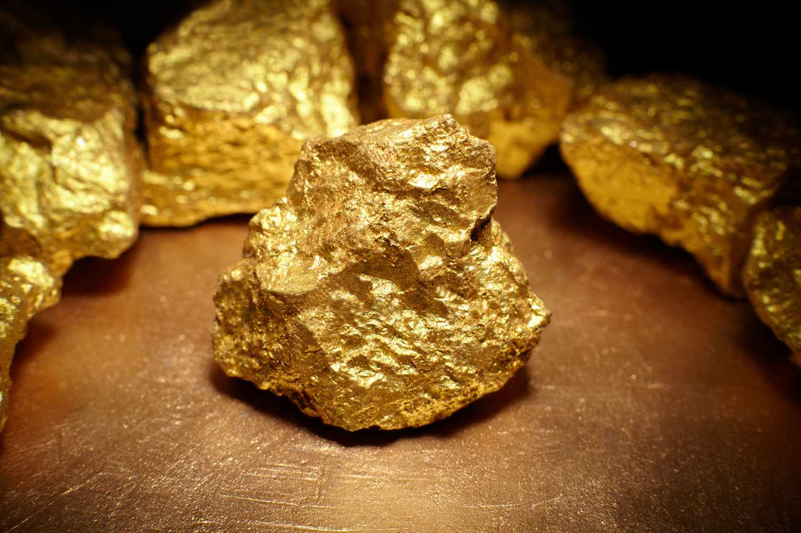

In what is being hailed as one of the most astonishing scientific breakthroughs of the century, a team of scientists from the International Institute of Alchemy has announced a seemingly miraculous discovery: a method to convert ordinary air into pure gold. This revelation, which defies the foundational principles of chemistry and physics, promises to upend the global economy and challenge our understanding of natural laws.
The team, led by the enigmatic Dr. Johnathan Esperanza, claims that this alchemical process is facilitated by a newly discovered element they have named "Aurelium." According to Dr. Esperanza, Aurelium, when extracted from the Earth's atmosphere in its pure form, acts as a catalyst, initiating a series of complex chemical reactions that transmute the molecular structure of air into gold atoms.
News of this discovery has sent shockwaves through the financial world. Economists are feverishly debating the implications of such a technology on global markets. With gold being a cornerstone of financial stability for millennia, the ability to create it from air could lead to a catastrophic devaluation of the precious metal, potentially destabilizing economies worldwide.
The environmental impact of this discovery is also a cause for grave concern. The process of extracting Aurelium from the atmosphere remains shrouded in mystery, with the research team keeping the specifics under wraps. Environmental advocacy groups are sounding alarms over the potential ecological consequences of tampering with the Earth's atmosphere at such a scale, fearing irreversible damage to the climate and delicate ecosystems.
Despite the fanfare surrounding this announcement, a wave of skepticism has arisen within the scientific community. Critics point out that the claim fundamentally contradicts the law of conservation of mass and lacks verifiable scientific evidence. Prominent physicists and chemists worldwide are calling for immediate peer review of the research, emphasizing the need for transparency and rigorous scientific validation.
The controversy has reached governmental levels, with several countries calling for an international summit to discuss the regulation of this new technology. Ethicists and policymakers are deeply concerned about the ethical implications and potential misuse of such a power, urging for a cautious approach.
In the midst of this turmoil, Dr. Esperanza and his team remain steadfast in their claims, promising to reveal more details in an upcoming scientific conference. The world watches with bated breath, torn between excitement for a new age of prosperity and fear of the unknown.
As debates rage and theories abound, one question looms large: Is this the dawn of a new era in human history, or merely a sophisticated ruse that preys on humanity's age-old fascination with turning base elements into gold?
 The chemical formula of gold exploitedImages by bodnarchuk